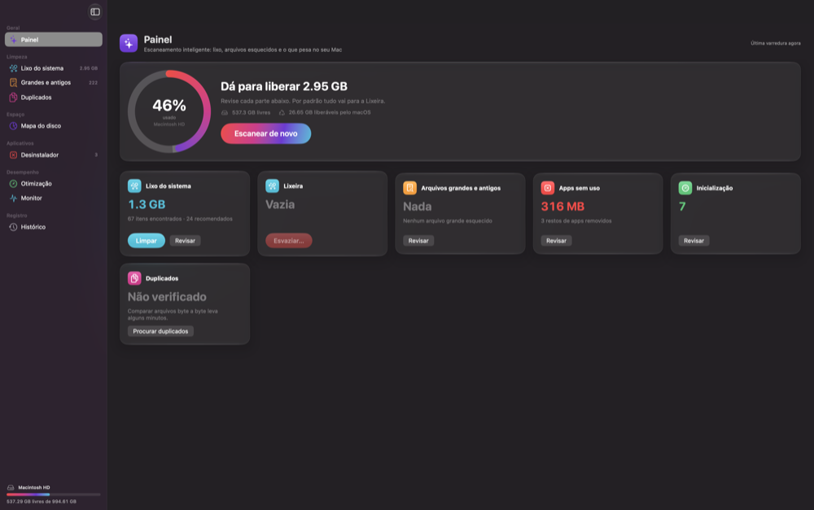
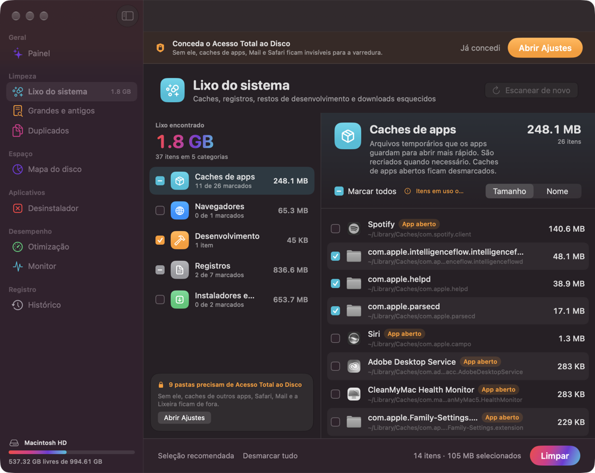
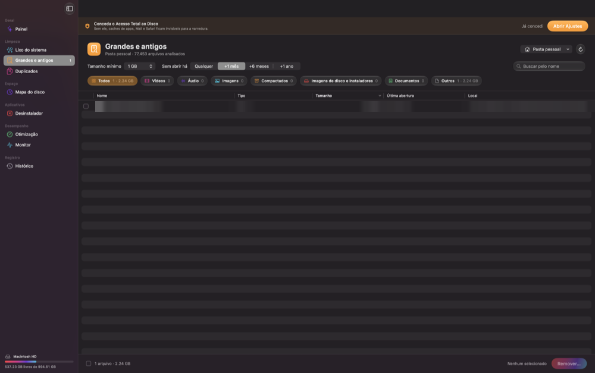
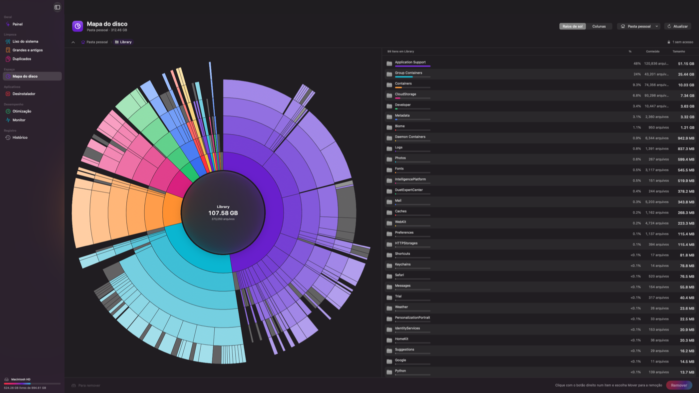
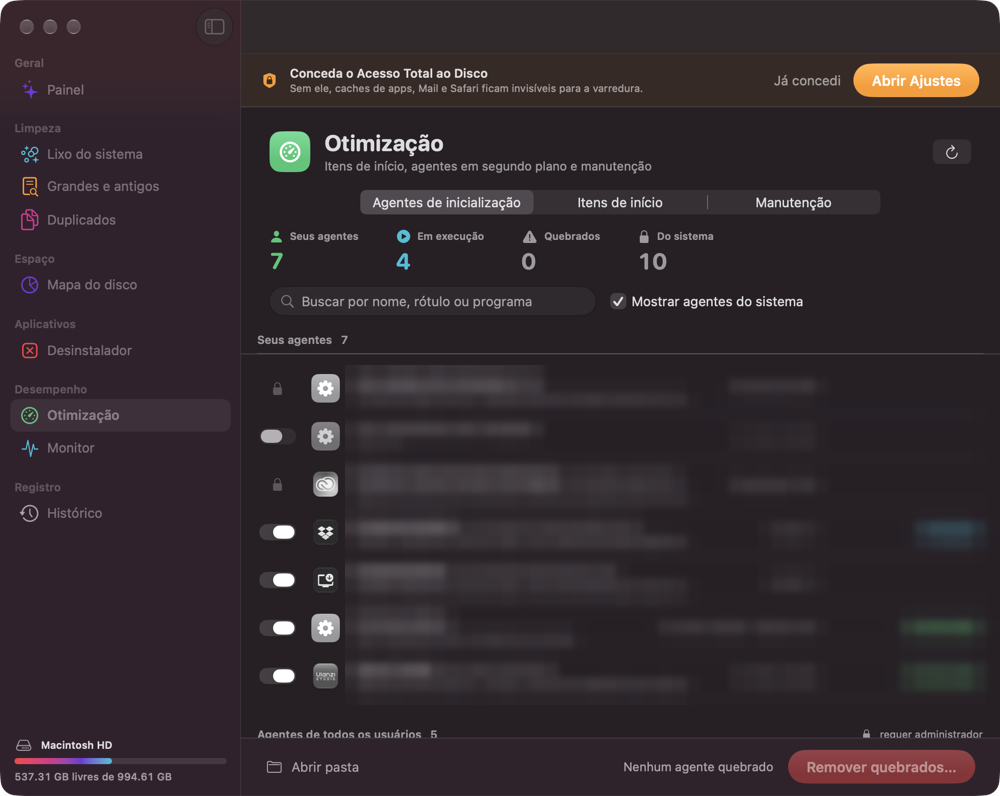
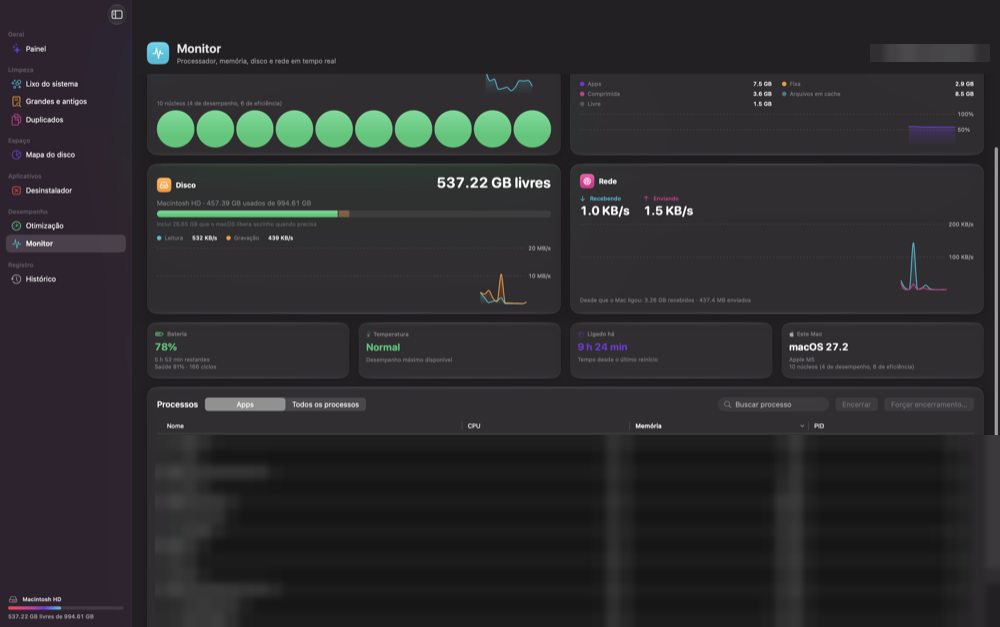
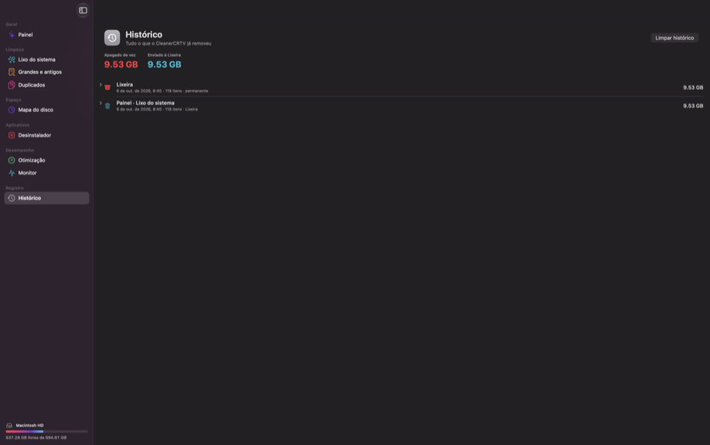

CleanerCRTV
Limpeza, arquivos grandes, duplicados, mapa do disco, desinstalador, otimização e monitor — num app só.
1. Instalar
- Abra o arquivo CleanerCRTV.dmg e arraste o CleanerCRTV para Aplicativos.
- Abra o app. Na primeira vez o macOS avisa que ele não é de um desenvolvedor identificado.
- Vá em Ajustes do Sistema ▸ Privacidade e Segurança, role até o fim e clique em Abrir Mesmo Assim.
Requer macOS 26 ou mais novo.
2. Acesso Total ao Disco
Sem essa permissão, caches de outros apps, Safari, Mail e a Lixeira ficam invisíveis. O app mostra uma faixa laranja no topo enquanto ela não for dada.
- Clique em Abrir Ajustes na faixa laranja.
- Ative o CleanerCRTV na lista Acesso Total ao Disco (se não aparecer, clique em + e escolha o app em Aplicativos).
- Volte ao app. A faixa some sozinha.
3. Como o app protege seus arquivos
- Nada é apagado sem confirmação. Toda remoção abre uma janela mostrando o que vai sair e quanto ocupa.
- Por padrão tudo vai para a Lixeira — dá para recuperar. Apagar de vez exige marcar “Entendo que não dá para desfazer”.
- O app nunca mexe no sistema (/System, /usr, Chaves, Fotos do sistema etc.). Só trabalha na sua pasta pessoal, em /Applications e em discos externos.
- Clique com o botão direito em qualquer item ▸ Ignorar sempre para ele nunca mais aparecer. A lista de ignorados fica em Ajustes (⌘ ,).
- Tudo removido fica registrado em Histórico.
4. Painel

Clique em Escanear: o app roda Lixo do sistema, Grandes e antigos, Desinstalador e Otimização ao mesmo tempo e mostra um cartão para cada.
- Limpar no cartão de Lixo remove só o que é recomendado (o mesmo que está marcado na tela do módulo).
- Revisar abre o módulo para você escolher item a item.
- Lixeira ▸ Esvaziar apaga de vez o que já está na Lixeira.
- Duplicados não roda no escaneamento rápido porque compara arquivos byte a byte e demora mais.
5. Lixo do sistema

Caches de apps e navegadores, registros antigos, restos de desenvolvimento (Xcode, npm…), anexos do Mail, instaladores esquecidos em Downloads e backups antigos de iPhone.
- Clique em Escanear.
- À esquerda ficam as categorias; clique numa para ver os itens à direita.
- Marque ou desmarque. Itens com a etiqueta App aberto ou Em uso começam desmarcados — feche o app antes de limpá-los.
- Clique em Limpar no rodapé e confirme.
Navegadores: só cache sai. Senhas, histórico, cookies e favoritos nunca entram.
6. Grandes e antigos

Arquivos pesados que você não abre há tempo.
- Tamanho mínimo e Sem abrir há filtram a lista.
- As pílulas (Vídeos, Áudio, Imagens…) filtram por tipo.
- Clique nas colunas para ordenar; espaço abre o Quick Look.
- Marque os arquivos e clique em Remover….
- No menu de cima à direita escolha outra pasta ou um disco externo.
7. Duplicados
Encontra cópias idênticas (conteúdo igual byte a byte, não só o nome).
- Escolha as pastas e clique em Procurar duplicados.
- Cada grupo mostra as cópias. O app já mantém uma (a mais antiga ou a que está no lugar mais “oficial”) e marca as outras.
- Confira as miniaturas, ajuste se quiser e clique em Remover. Ao menos uma cópia de cada grupo sempre fica.
8. Mapa do disco

Mostra onde está o espaço, no estilo OmniDiskSweeper / DaisyDisk.
- Raios de sol: cada anel é um nível de pasta. Clique num pedaço para entrar; clique no centro para voltar.
- Colunas: navegação como no Finder, com tamanhos.
- Escolha a pasta ou disco no menu do topo; Atualizar lê de novo.
- Botão direito ▸ Mover para a remoção junta itens na bandeja “Para remover”; depois clique em Remover.
9. Desinstalador
Remove apps e o que eles espalham (preferências, caches, suportes, agentes).
- Escolha o app na lista (busque pelo nome; dá para ordenar por tamanho ou último uso).
- À direita aparecem o app e os restos encontrados. Desmarque o que quiser manter.
- Clique em Desinstalar…. Se o app estiver aberto, o CleanerCRTV oferece encerrá-lo.
Restos (aba no topo): sobras de apps que você já apagou antes.
Apps da Apple que vêm com o macOS não podem ser removidos.
10. Otimização

- Agentes de inicialização: programas que rodam em segundo plano. A chave liga/desliga; Remover quebrados limpa os que apontam para apps que não existem mais. Os do sistema (cadeado) só podem ser vistos.
- Itens de início: o que abre ao entrar na conta. Atalho para ajustar em Ajustes do Sistema.
- Manutenção: liberar memória, limpar cache de DNS, reindexar o Spotlight etc. Tarefas que exigem administrador pedem sua senha do Mac na hora.
11. Monitor e barra de menus

Processador, memória, disco, rede, bateria e temperatura em tempo real, mais a lista de processos.
- Selecione um processo e clique em Encerrar (ou Forçar encerramento se ele travou).
- O ícone na barra de menus mostra um resumo; clique nele para o painel completo. Desative em Ajustes se não quiser.
- Com o ícone ativo, fechar a janela não encerra o app. Para sair de vez: ⌘ Q.
12. Histórico

Tudo o que o app removeu, de onde, quanto e se foi para a Lixeira ou apagado de vez. Clique na seta para ver os caminhos. Itens enviados à Lixeira podem ser recuperados no Finder (Lixeira ▸ botão direito ▸ Pôr de Volta).
13. Atalhos e dicas
- ⌘ 1 … ⌘ 9: pula direto para cada tela (na ordem da barra lateral).
- ⌘ ,: Ajustes (modo padrão de remoção, ignorados, barra de menus, animação de abertura).
- espaço: marca/desmarca ou Quick Look na lista selecionada; clique duplo mostra no Finder.
- Rode o Painel uma vez por semana; os caches voltam a crescer naturalmente.